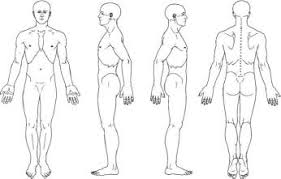

· Visit · · prev
1 Flaccid · ไม่มี movement
2 เริ่มมี synergy · spasticity เริ่มขึ้น
3 Synergy ชัด · spasticity สูงสุด
4 เริ่มมี movement นอก synergy · spasticity ลด
5 Movement นอก synergy ได้มากขึ้น
6 Movement เกือบปกติ · coordination ดี
0 · 1 · 1+ · 2 · 3 · 4
0 ไม่มี tone เพิ่ม
1 เพิ่มเล็กน้อย · catch แล้วปล่อย ปลายช่วง
1+ เพิ่มเล็กน้อย · catch + ต้านน้อย <½ ROM
2 เพิ่มชัดเกือบทั้ง ROM · ขยับ passive ได้
3 เพิ่มมาก · passive ยาก
4 Rigid · งอ/เหยียดไม่ได้
0 · 1 · 2 · 3 · 3+ · 4 · 5
0 ไม่มีการหดตัว · 1 คลำได้แต่ไม่ขยับ · 2 ขยับได้เมื่อตัดแรงโน้มถ่วง
3 ต้านแรงโน้มถ่วงได้ · 3+ + แรงต้านเล็กน้อย · 4 ต้านปานกลาง · 5 ปกติ
✓ intact · ~ impaired · ✗ absent
เขียน/วาดด้วย S Pen หรือนิ้ว · auto-save อัตโนมัติ

เขียนด้วย S Pen หรือนิ้ว · แตะ 🧧 ยางลบ เพื่อลบ · auto-save
I · S · MinA · ModA · MaxA · D
I Independent ทำเองได้ · S Supervision/standby ดูแลห่าง ๆ
MinA ช่วย ~25% · ModA ~50% · MaxA ~75% · D Dependent ทำให้ทั้งหมด
0–20 dependent · 21–60 severe · 61–90 moderate · 91–99 slight · 100 independent
แต่ละข้อมีคำอธิบายกำกับปุ่มอยู่แล้ว
โน้ตนี้ติดไปกับ visit · ก๊อปจาก visit ก่อนอัตโนมัติ